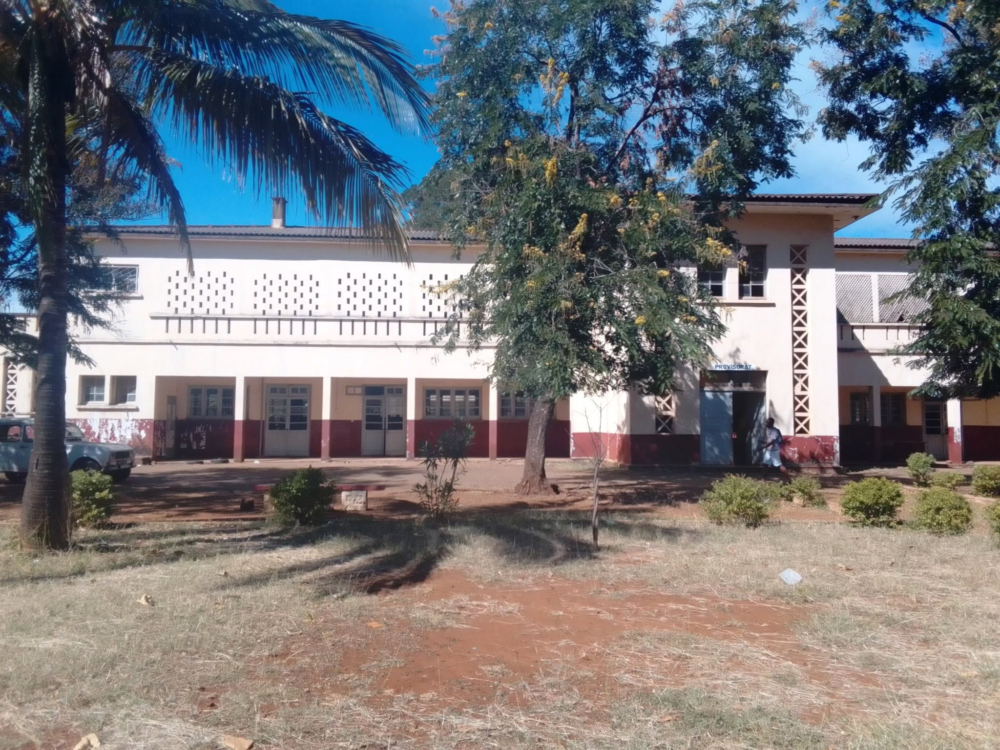
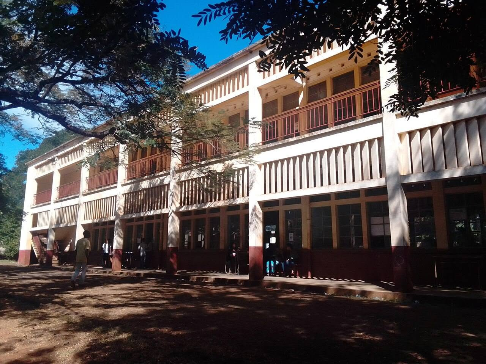
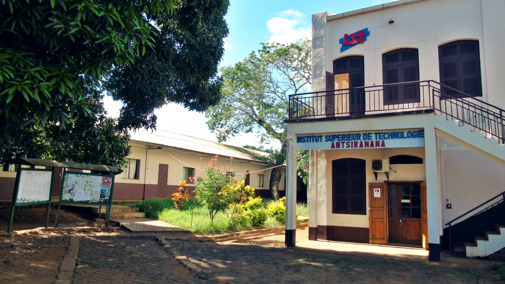
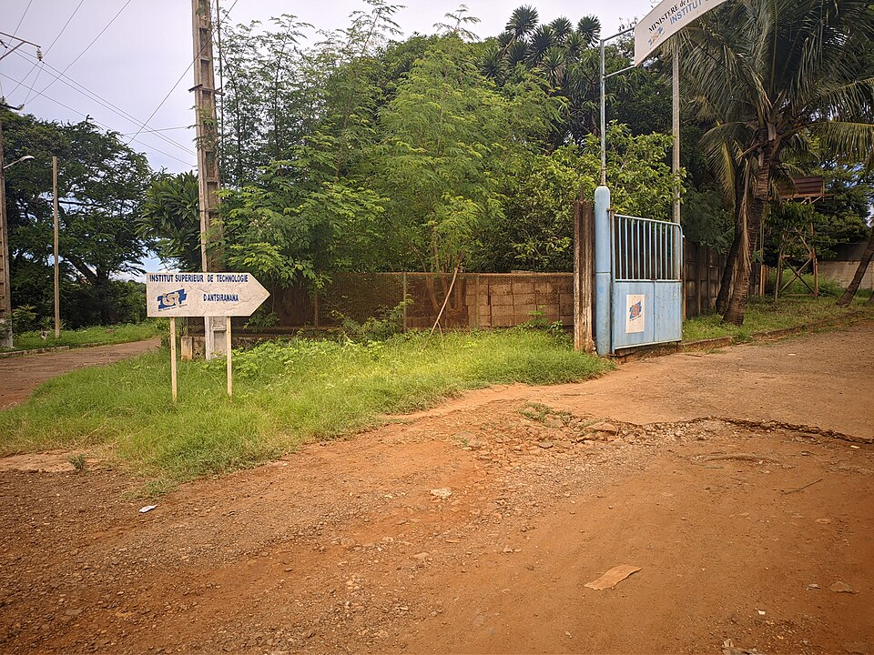
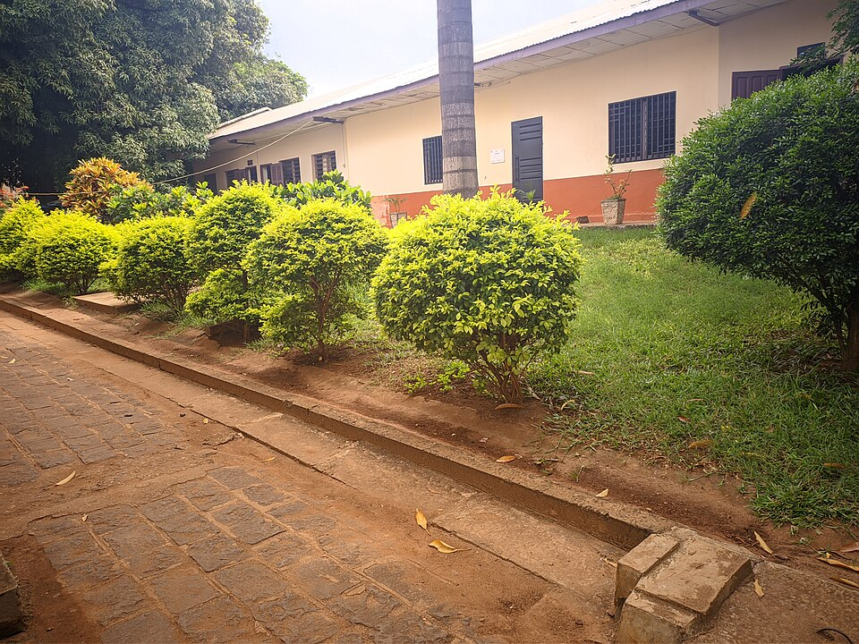

Lycée Mixte Antsiranana
{kind=link}

{kind=link}

Le Lycée Mixte d'Antsiranana (officiellement renommé Lycée Albert Zafy )est un
établissement public d'enseignement général historique situé au cœur de la ville
d'Antsiranana (Diego-Suarez) . Fondé à la fin des années 1950, il accueille les élèves
du deuxième cycle secondaire pour les préparant au baccalauréat malgache.
📍 Localisation
- Quartier : Tanambao Avaratra, Antsiranana 201.
- Repères : Situé à proximité immédiate du Stade de la ville et de l'Institut National de
Formation Pédagogique (INFP).
🏛️ Historique et Importance
- Origines : Les bâtiments provisoires du lycée ont ouvert leurs portes en 1959 . Il a été
l'un des premiers grands centres d'enseignement secondaire mixte de la région Diana. - Nom officiel : Bien qu'il reste universellement connu sous le nom de "Lycée Mixte", il
porte aujourd'hui le nom de Lycée Albert Zafy , en hommage à l'ancien président de
la République de Madagascar. - Rôle régional : Cet établissement public central a formé de nombreuses générations
de cadres et d'intellectuels du Nord de Madagascar.
Institut Supérieur de Technologie d'Antsiranana
{kind=link}

{kind=link}

{kind=link}

L' Institut Supérieur de Technologie d'Antsiranana (IST-D) est un établissement
public d'enseignement supérieur technique et professionnel de premier plan. Fondé en
1992 , il forme des techniciens supérieurs (DTS), des techniciens supérieurs spécialisés
(DTSS) et des ingénieurs hautement qualifiés.
📍 Localisation
- Adresse : Boulevard de G. Bayer, Antsiranana (Diego-Suarez).
- Horaires de bureaux : Lundi au vendredi, de 7h30 à 11h30 et de 14h30 à 17h30.
- Inscriptions et Concours : Les formulaires d'inscription aux concours d'entrée pour
l'année universitaire sont téléchargeables sur la Plateforme de Scolarité Officielle de
l'ISTD . - Réseaux sociaux : Pour suivre l'actualité des projets, les concours d'innovation et les
événements, consultez la Page Facebook de l'IST-D .
🏛️ Organisation et Formations
L'IST-D regroupe environ 800 étudiants répartis au sein de 3 grandes Écoles du Génieoffrant 7 mentions et 26 parcours :
- École du Génie Civil et du Génie Naval (EGCGN)
- École du Génie Industriel (EGI) : maintenance, énergie (avec une transition vers
l'autonomie énergétique solaire), technologies de l'information et
télécommunications. - École du Génie en Management, Commerce et Services (EGMCS) : gestion,
comptabilité, banque et assurances, tourisme et hôtellerie.